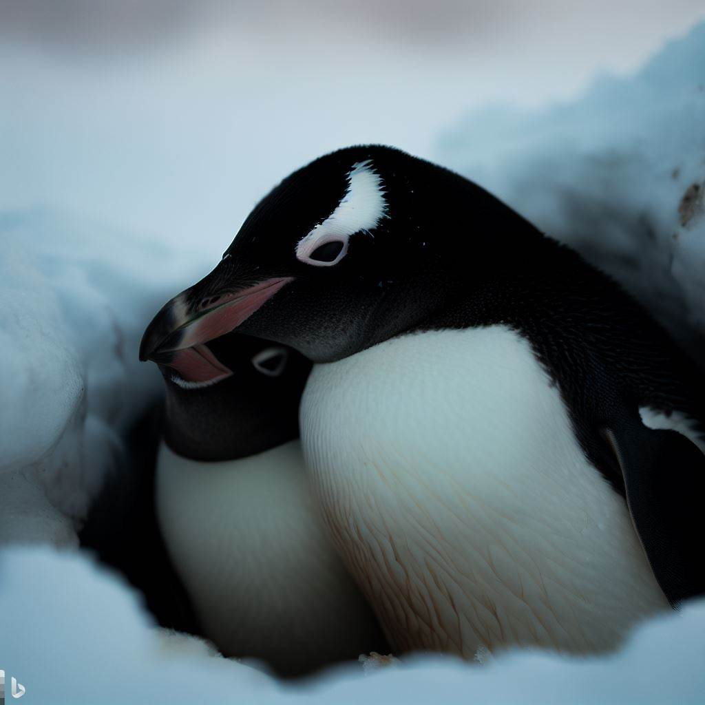

¿Cómo hacen los pingüinos para mantenerse calientes en el frío extremo del Ártico?
Los pingüinos tienen una capa gruesa de plumas que les ayuda a mantener el calor corporal. Además, también tienen una capa gruesa de grasa debajo de su piel, llamada blubber, que les ayuda a mantener el calor y a flotar en el agua.
